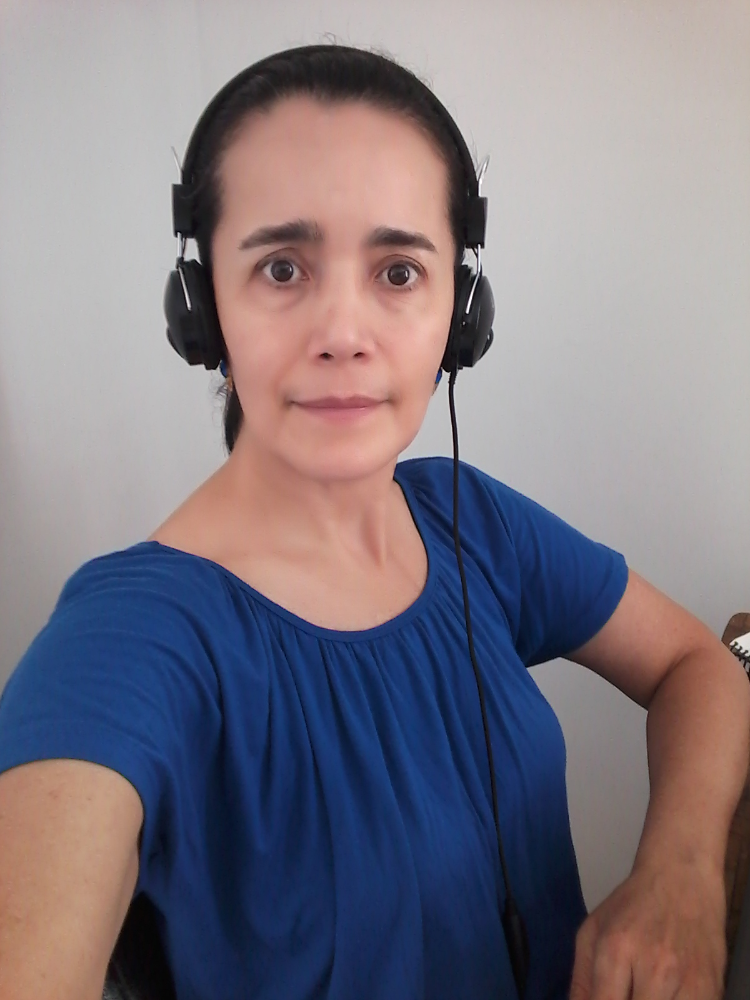

Elsa Victoria Barragán Oliveros

Descripción Personal
Ingeniera de Sistemas con Especialización en Gerencia de Proyectos y Master Executive en Gestión de
las Telecomunicaciones y Tecnologías de la Información con conocimientos y experiencia en Gestión de
Proyectos de integración tecnológica aplicando las mejores prácticas del PMI (Project Management
Institute).
Conocimientos en programación de software en PHP, Java y Javascript, diseño web CSS3, HTML5,
gestión de bases de datos SQL-Server y plataforma de integración ágil WSO2.
Educación
- Master Executive en Gestión de las Telecomunicaciones y Tecnologías de la Información.
Fundación EOI - Escuela de Negocios-
Madrid, España
Junio de 2008
- Especialista en Gerencia de Proyectos
Universidad Piloto de Colombia
Bogotá, Colombia
Marzo de 2007
- Ingeniero de Sistemas
Institución Universitaria Politécnico Grancolombiano
Bogotá, Colombia
Agosto de 1996
- Técnico en Programación de Software
SENA
Ibagué, Colombia
Marzo de 2019
- Tecnología en Análisis y Desarrollo de Sistemas de Información (ADSI)
SENA
Bogotá, Colombia
(fase lectiva terminada)
Experiencia Laboral
- APICOM S.A.S.
Agente Coordinador Regional
Febrero 08 de 2021 – Julio 31 de 2021
- Superintendencia de Economía Solidaria – Supersolidaria
Contratista – Ingeniero de Sistemas
Agosto 29 de 2019 – Diciembre 31 de 2019
- Global Hitss Colombia S.A.S.
Gerencia de Servicio Operación y Monitoreo de Servicios
Analista de Operaciones
Agosto 15 de 2018 – Febrero 14 de 2019
- Componente Serviex
Área de Infraestructura
Coordinadora de Soporte, Redes e Infraestructura
Febrero 07 de 2018 – Junio 12 de 2018
- Serdan-ETB
Gerencia de Soluciones TI y Experiencia al Cliente
Gerente de Proyectos
Octubre 03 de 2012 a 31 de julio de 2014
- Projection Core Consulting S.A.
Project Management Office
Asistente PMO
Diciembre 01 de 2011 a Febrero 01 de 2012
- Visión Consultoría, Universidad de la Sabana
Coordinadora de Infraestructura
Julio 01 de 2010 a Diciembre 17 de 2010
- Empresa de Telecomunicaciones de Bogotá, ETB (Tiempo Total: 3 años, 9 meses, 27 días)
Ingeniero de Proyectos (Febrero 2005 – Diciembre 2006)
Ingeniero de Atención a fallas (Marzo 03 de 2003 – Enero 2005)
- Compañías Contratistas de ETB (Tiempo Total Contratista ETB: 6 meses)
SITCOM (Febrero 01 a 28 de 2003) y
ASECONES S.A. (Julio 17 de 2002 – Enero 17 de 2003)
Ingeniera de Gestión de Red
- Emtelco S.A.
Ingeniera de Soporte Corporativo de la Red de Datos
Octubre 20 de 1997 a 01 febrero de 2001
Skills
Fortalezas en comunicación, habilidad para manejo de conflictos, implementación de cronogramas y negociación.
Profesional con orientación al logro y sentido de pertenencia.
Hobbies
Montar en bicicleta, ir al gimnasio, ver televisión, la moda.
Expectativas curso Henry
Aprender sobre programación y específicamente profundizar en el tema de persistencia a la BD,
patrones de diseño (SOLID) y patrones GoF.